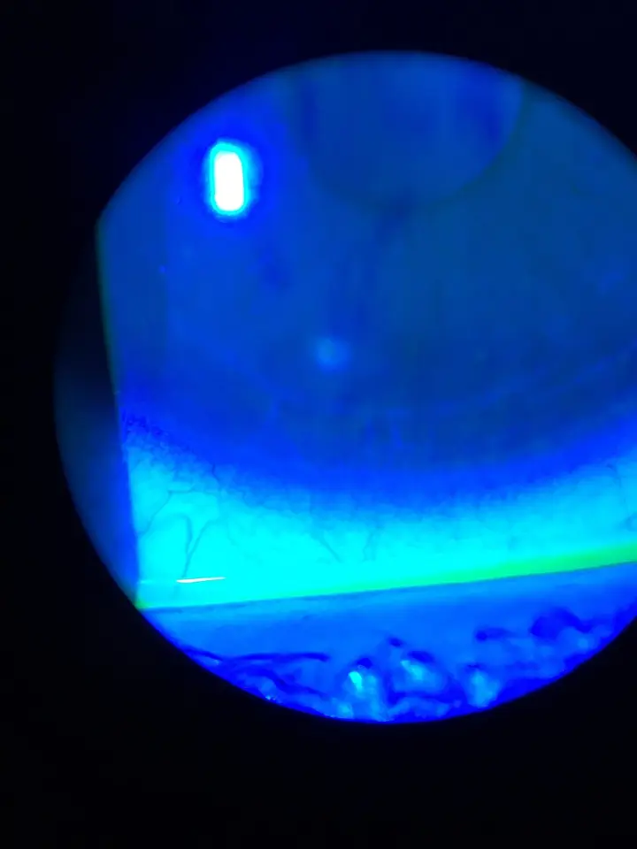

Yeux douloureux, rouges ou prurigineux ; écoulement oculaire — S1.17
DX.7 — Kératite infectieuse
Ce diagnostic occupe le huitième rang de fréquence de la Phase A et porte le rang d’exclusion E2 🚩.
La kératite infectieuse rend l’œil rouge, douloureux et photophobe, surtout chez le porteur de lentilles, et elle menace la visionS1S2. Le médecin retire les lentilles, les conserve dans l’étui et adresse le patient en urgence, sans corticoïde topiqueS1. L’ophtalmologue prélève, puis il traite par collyre antibiotique intensif selon l’AIPS (information professionnelle suisse)AIPS 51898S3.
Ce cours sur la kératite infectieuse repose uniquement sur les sources citées, et aucun médecin ne l’a encore validé cliniquement.
1. Définition
Le College of Optometrists définit la kératite microbienne comme une infection bactérienne ou fongique de la cornée qui menace la visionS2. Les HUG (Hôpitaux universitaires de Genève) la rangent parmi les kératites, inflammations cornéennes souvent associées à une inflammation conjonctivale et fréquemment d’origine infectieuseS1.
2. Épidémiologie (Suisse, puis Europe)
Aucune incidence suisse de kératite infectieuse ne figure dans les sources lues, si bien que le rang 8 du lot reste argumenté plutôt que mesuréS1. Au Royaume-Uni, Ting et ses collègues rapportent une incidence de 2,6 à 40,3 cas pour 100 000 habitants par anS3. À Nottingham, cette incidence reste stable à 34,7 pour 100 000 habitants par an entre 2007 et 2019S3. La fenêtre chiffres utiles rassemble ces données avec leur population et leur source.
Chiffres utiles de la kératite infectieuse
| Chiffre | Population | Année | Source |
|---|---|---|---|
| 2,6 à 40,3 cas pour 100 000 habitants par an | Royaume-Uni, études anciennes | 2021 | S3 |
| 34,7 cas pour 100 000 habitants par an | Nottingham, Royaume-Uni, 2007 à 2019 | 2021 | S3 |
| 2,5 à 27,6 cas pour 100 000 habitants par an | États-Unis, source non européenne | 2021 | S3 |
| 2,5 à 799 cas pour 100 000 habitants par an | Monde, selon le lieu et la méthode | 2021 | S3 |
| Port de lentilles : facteur favorisant principal dans 29 à 64 % des cas | Pays développés, dont Portugal, France et Suède | 2021 | S3 |
| Kératite amibienne liée aux lentilles dans plus de 90 % des cas | Séries publiées | 2021 | S3 |
| Mauvais résultat visuel chez 73 % des patients déjà traités par corticoïde topique | Kératite infectieuse avec corticoïde antérieur | 2021 | S3 |
| Acuité inférieure à 6/60 chez environ 40 à 75 % des personnes âgées atteintes | Sujets âgés | 2021 | S3 |
Les facteurs favorisants se répartissent en quatre familles, que Ting décrit comme les terrains habituels de la kératite infectieuseS3. La fenêtre facteurs favorisants associe chacun à son mécanisme probable et à la question qui le révèle.
Facteurs favorisants de la kératite infectieuse
| Famille | Facteur précis | Donnée rapportée | Question ou geste qui le révèle | Source |
|---|---|---|---|---|
| Lentilles de contact | Lentilles souples plutôt que rigides perméables aux gaz | Risque plus élevé avec les lentilles souples | Type de lentille porté | S3 |
| Lentilles de contact | Mauvaise hygiène des lentilles et de l’étui, port nocturne, lentilles périmées | Facteurs favorisants identifiés | Entretien et durée de port | S3 |
| Lentilles de contact | Risque comparé au non-porteur | 130,4 contre 14,0 cas pour 100 000 personnes-années, étude californienne non européenne | Port de lentilles | S3 |
| Traumatisme | Plaie ou corps étranger | Surtout des Gram positifs dans les séries européennes | Circonstance de l’accident | S3 |
| Maladie de la surface oculaire | Sécheresse, kératopathie neurotrophique, rosacée | Gram positifs dans 60 à 80 % des cas | Antécédents oculaires | S3 |
| Chirurgie cornéenne | Greffe de cornée, chirurgie réfractive, réticulation du collagène | Kératite après greffe chez 4 % des patients, sutures en cause chez 24 % | Antécédent opératoire | S3 |
| Exposition ou anesthésie cornéenne | Paralysie faciale, atteinte de la première branche du trijumeau | Kératite d’exposition ou neurotrophique | Fermeture palpébrale, sensibilité | S1 |
| Terrain général | Diabète, immunodépression, corticoïde topique antérieur | Croissance microbienne favorisée par l’hyperglycémie | Antécédents et traitements | S2S3 |
La kératite infectieuse reste la première cause de cécité cornéenne, dans les pays développés comme dans les pays en développementS3. En Europe, le port de lentilles représente le premier facteur favorisant, alors que le traumatisme agricole devient prépondérant dans les pays à faibles ressourcesS3. La fenêtre germes en cause associe chaque micro-organisme à sa fréquence et à son terrain.
Germes en cause et terrains
| Germe | Fréquence rapportée | Terrain typique | Conséquence pratique | Source |
|---|---|---|---|---|
| Staphylocoques à coagulase négative | 24 à 46 % des isolats dans environ la moitié des études | Maladie de la surface oculaire, chirurgie | Couverture des Gram positifs | S3 |
| Staphylococcus aureus | 5 à 36 % | Traumatisme en Europe, surface oculaire | Couverture des Gram positifs | S3 |
| Streptocoques | 7 à 16 % | Traumatisme | Couverture des Gram positifs | S3 |
| Pseudomonas aeruginosa | 5 à 24 % | Porteur de lentilles | Fluoroquinolone ou aminoside actifs sur les Gram négatifs | S3 |
| Moraxella | En hausse au Royaume-Uni | Variable | Cicatrisation souvent plus longue | S3 |
| Champignons filamenteux et levures | Plus rares en climat tempéré | Greffe de cornée, maladie de la surface, traumatisme végétal | Signes évocateurs à rechercher, avis spécialisé | S2S3 |
| Acanthamoeba | Plus de 90 % liés aux lentilles | Porteur de lentilles | Diagnostic spécialisé | S3 |
3. Physiopathologie
La surface oculaire résiste normalement à l’infection, car ses défenses innées et adaptatives restent très réguléesS3. La kératite survient donc rarement sans facteur favorisant, comme une lentille, un traumatisme, une maladie de la surface oculaire ou une chirurgie cornéenneS3. La fenêtre base à connaître montre la cornée, l’iris et la sclère sur une coupe annotée.
Base à connaître : la cornée dans l’œil
Coupe anatomique de l’œil : Blausen Medical a réalisé ce dessin anatomique en couleurs, diffusé sous licence CC BY 3.0S5.

Le lecteur recherche d’abord sur le dessin brut la cornée transparente, l’iris bleu et la sclère blanche.
- La cornée, première lentille de l’œil, constitue la fenêtre transparente que l’infection opacifie.
- L’iris, en arrière de la chambre antérieure, réagit à l’inflammation par une iritis, que l’atropine soulage.
- La sclère blanche prolonge la cornée, et la rougeur périlimbique se concentre à leur jonction.
- Le piège consiste à oublier que la cornée n’a pas de vaisseaux, de sorte que toute opacité blanche signale un infiltrat.
Le germe colonise alors la cornée, puis l’infiltrat blanchâtre et l’ulcère apparaissent, si bien que la cornée perd sa transparenceS1S2. L’inflammation gagne ensuite le segment antérieur, et le spasme ciliaire rend la douleur intenseS2. Sans traitement rapide, la cornée peut se perforer ou laisser une cicatrice qui réduit la vision de façon irréversibleS1. La fenêtre ulcère coloré montre un petit ulcère lié aux lentilles.
L’ulcère cornéen coloré par la fluorescéine
Petit ulcère cornéen chez un porteur de lentilles : Iceclanl a publié cette photographie en couleurs à la lampe à fente, après fluorescéine sodique, sous licence CC BY-SA 4.0S6.

Le lecteur recherche d’abord sur le cliché brut la petite plage claire au centre, le reflet en haut et la bande verte en bas.
- La petite plage arrondie, plus claire au centre de la cornée, correspond à l’ulcère que la fluorescéine colore sous lumière bleue.
- La tache blanche brillante en haut correspond au reflet de la lampe, qui ne constitue pas une lésion.
- La bande vert vif en bas montre le film lacrymal chargé de colorant, accumulé au bord de la paupière inférieure.
- Le piège consiste à confondre le reflet et l’ulcère, alors que seule la plage colorée traduit la perte épithéliale.
Chaque perturbation possède un signe, un examen et un traitement propres, et la fenêtre corrélation mécanisme–signe–conduite les associe ligne par ligne.
Corrélation : mécanisme, signe, examen et traitement
| Perturbation | Signe clinique | Examen qui la montre | Traitement qui la corrige | Source |
|---|---|---|---|---|
| Rupture de l’épithélium cornéen | Sensation de corps étranger, larmoiement | Lampe à fente avec fluorescéine chez l’ophtalmologue | Collyre antibiotique intensif | S1S6 |
| Infiltrat du stroma | Opacité cornéenne blanchâtre | Lampe à fente, grattage cornéen pour culture | Antibiotique adapté au germe | S1S3 |
| Spasme du muscle ciliaire | Douleur et photophobie intenses | Interrogatoire, examen spécialisé | Cycloplégique topique | S2AIPS 46994 |
| Réaction inflammatoire de la chambre antérieure | Hypopion | Lampe à fente | Traitement de l’infection, atropine si iritis | S1AIPS 46994 |
| Amincissement du stroma | Risque de perforation | Suivi ophtalmologique rapproché | Prise en charge chirurgicale spécialisée | S1S3 |
| Contamination de la lentille ou de l’étui | Kératite chez un porteur de lentilles | Analyse bactériologique des lentilles et de l’étui | Traitement ciblé sur le germe isolé | S1S2 |
4. Démarche diagnostique
La kératite infectieuse porte le rang d’exclusion E2 du lot, car elle menace la vision en quelques heures et impose l’ophtalmologue le jour mêmeS1S2. Le médecin la recherche devant un œil rouge douloureux avec photophobie, sensation de corps étranger et blépharospasme, surtout chez un porteur de lentillesS1. Il ne cherche pas à confirmer seul le diagnostic, car la lampe à fente manque au cabinetS1. La fenêtre démarche en cinq étapes décrit la suite des décisions.
Démarche diagnostique en cinq étapes
| Étape | Question | Élément décisif | Conduite | Source |
|---|---|---|---|---|
| 1 | L’œil rouge est-il douloureux avec photophobie ? | Douleur, photophobie, blépharospasme | Suspicion de kératite | S1 |
| 2 | Un facteur favorisant existe-t-il ? | Lentilles, traumatisme, chirurgie récente, paralysie faciale ou trigéminale | Suspicion renforcée | S1 |
| 3 | La cornée a-t-elle perdu sa transparence ? | Tache blanchâtre, infiltrat, hypopion | Urgence ophtalmologique | S1 |
| 4 | Le patient porte-t-il des lentilles ? | Lentilles portées au début des symptômes | Retrait, conservation dans l’étui pour la bactériologie | S1 |
| 5 | Qui confirme et traite ? | Lampe à fente et grattage chez l’ophtalmologue | Envoi le jour même, sans corticoïde topique | S1S2 |
Plusieurs diagnostics du lot partagent l’œil rouge, mais la douleur et l’atteinte cornéenne séparent vite la kératite des conjonctivitesS1. La fenêtre diagnostic différentiel met chaque voisin en regard du signe qui l’écarte.
Diagnostic différentiel dans le lot
| Diagnostic | Ce qui ressemble | Ce qui sépare | Conduite | Source |
|---|---|---|---|---|
| DX.2 Conjonctivite bactérienne aiguë | Œil rouge, sécrétions purulentes | Gêne sans douleur vraie, cornée claire | Traitement en premier recours selon les critères | S1S2 |
| DX.1 Conjonctivite virale non herpétique | Corps étranger, larmoiement | Sécrétions claires, adénopathie, cornée claire | Soins de support | S1 |
| DX.8 Uvéite antérieure aiguë 🚩 E3 | Photophobie, cercle périkératique, hypopion | Cornée claire et absence de lentilles | Ophtalmologue en urgence | S1 |
| DX.9 Crise aiguë de fermeture de l’angle 🚩 E1 | Œil rouge douloureux, vision floue | Halos, céphalée, nausées, pupille en semi-mydriase | Urgence immédiate, aucun mydriatique | S1 |
| DX.10 Sclérite 🚩 E4 | Douleur sévère | Douleur à la mobilisation, rougeur sclérale localisée, maladie systémique | Ophtalmologue | S1 |
| Kératite herpétique (Phase A) | Œil rouge douloureux, atteinte cornéenne | Vésicules palpébrales, antécédent herpétique | Ophtalmologue ; aucun corticoïde en premier recours | S1S3 |
5. Anamnèse ciblée et drapeaux rouges
L’anamnèse recherche d’abord le port de lentilles, car il constitue la cause habituelle de kératite microbienne selon le CollegeS2. Elle précise ensuite l’hygiène des lentilles, le port nocturne et l’usage de lentilles périmées, que Ting associe au risqueS3. La fenêtre questions ciblées associe chaque question à sa réponse évocatrice et à son sens clinique.
Questions ciblées et interprétation
| Question | Réponse évocatrice | Interprétation | Source |
|---|---|---|---|
| Portez-vous des lentilles, souples ou rigides ? | Lentilles souples | Risque plus élevé qu’avec les lentilles rigides perméables aux gaz | S3 |
| Dormez-vous avec vos lentilles ? | Oui | Port nocturne : facteur favorisant | S3 |
| Comment nettoyez-vous les lentilles et l’étui ? | Hygiène approximative, lentilles périmées | Facteurs favorisants de la kératite liée aux lentilles | S3 |
| Qui vous a remis ces lentilles ? | Achat sans professionnel de la vue | Facteur favorisant rapporté par Ting | S3 |
| Avez-vous reçu un choc ou un végétal dans l’œil ? | Traumatisme végétal | Risque fongique augmenté | S3 |
| Avez-vous été opéré de la cornée ou greffé ? | Oui | Kératite après chirurgie ; levures possibles après greffe | S1S3 |
| Utilisez-vous un collyre à la cortisone ? | Oui | Corticoïde antérieur associé à un mauvais résultat | S3 |
| Êtes-vous diabétique ou immunodéprimé ? | Oui | Douleur parfois absente chez le diabétique ; défense diminuée | S1S2 |
Les symptômes typiques associent un œil rouge douloureux, une photophobie souvent au premier plan, un larmoiement, un blépharospasme et parfois des troubles visuelsS1. Chez le diabétique, la douleur peut manquer, de sorte que son absence n’écarte jamais la kératiteS1. La fenêtre drapeaux rouges relie chaque signe d’alarme au diagnostic à craindre et à la conduite.
Drapeaux rouges et conduite
| Drapeau rouge | Diagnostic à craindre | Conduite | Source |
|---|---|---|---|
| Port de lentilles avec œil rouge douloureux | Kératite bactérienne ou amibienne | Retrait, lentilles et étui conservés, ophtalmologue en urgence | S1 |
| Photophobie intense | Kératite, uvéite | Examen spécialisé en urgence | S1 |
| Baisse de la vision | Infiltrat central, perforation | Examen spécialisé en urgence | S1 |
| Infiltrat cornéen ou hypopion | Kératite sévère | Consultation ophtalmologique en urgence | S1 |
| Traumatisme oculaire récent | Kératite post-traumatique, corps étranger | Examen spécialisé en urgence | S1 |
| Absence de réponse après 48 heures de traitement | Germe résistant, champignon, amibe | Avis ophtalmologique | S1 |
| Zona de la première branche du trijumeau | Atteinte cornéenne zostérienne | Avis ophtalmologique en urgence | S1 |
| Patient monophtalme | Perte fonctionnelle grave | Avis ophtalmologique en urgence | S1 |
6. Examen physique ciblé, région par région
L’examen du médecin de premier recours reste comparatif et limité sans lampe à fente, mais il suffit à reconnaître l’urgenceS1. Le médecin ne palpe pas le globe pour estimer la pression, car ce geste manque de fiabilitéS1. Chaque région figure dans sa propre fenêtre : vision, paupières, conjonctive et limbe, cornée, chambre antérieure et pupille et face et nerfs crâniens.
Région 1 : vision
Région 2 : paupières et sécrétions
| Geste | Attendu dans la kératite | Anomalie qui alerte | Interprétation et conduite | Source |
|---|---|---|---|---|
| Inspection des paupières | Fermeture réflexe, larmoiement | Paupière qui ne se ferme pas | Kératite d’exposition à évoquer | S1S2 |
| Analyse des sécrétions | Écoulement purulent en cas de surinfection | Sécrétions abondantes | Infection active | S1 |
| Recherche de vésicules | Absentes | Vésicules unilatérales | Origine herpétique à évoquer | S1 |
Région 3 : conjonctive et limbe
| Geste | Attendu dans la kératite | Anomalie qui alerte | Interprétation et conduite | Source |
|---|---|---|---|---|
| Répartition de la rougeur | Rougeur périlimbique, appelée cercle périkératique | Rougeur diffuse sans cercle | Conjonctivite plus probable si la cornée est claire | S1 |
| Rougeur unilatérale | Atteinte habituellement unilatérale | Atteinte bilatérale | Autre diagnostic à discuter | S2 |
Région 4 : cornée
Région 5 : chambre antérieure et pupille
| Geste | Attendu dans la kératite | Anomalie qui alerte | Interprétation et conduite | Source |
|---|---|---|---|---|
| Recherche d’un hypopion | Absent dans la forme débutante | Niveau blanchâtre déclive | Consultation ophtalmologique en urgence | S1 |
| Réflexe pupillaire | Pupilles comparées sous éclairage faible | Pupille aréactive, anisocorie nouvelle | Drapeau rouge | S1 |
Hypopion vu à la lampe à fente : Imrankabirhossain a publié cette photographie en couleurs sous licence CC BY-SA 4.0S7.

Le lecteur recherche d’abord sur le cliché brut le niveau clair au bas de la chambre antérieure et la couronne rouge du limbe.
- Le niveau horizontal blanc-jaune au bas de la chambre antérieure correspond à l’hypopion, fait de cellules inflammatoires déposées.
- La conjonctive rouge vif près du limbe montre l’injection périlimbique qui accompagne l’atteinte cornéenne ou uvéale.
- Le voile grisâtre au-dessus du niveau trouble la vision des structures, car la cornée et l’humeur aqueuse perdent leur transparence.
- Le piège consiste à attribuer d’emblée l’hypopion à une uvéite, alors qu’il peut aussi traduire une kératite infectieuse sévère.
Région 6 : face et nerfs crâniens
| Geste | Attendu dans la kératite | Anomalie qui alerte | Interprétation et conduite | Source |
|---|---|---|---|---|
| Fermeture palpébrale et mimique | Normales | Paralysie du nerf facial | Kératite d’exposition | S1 |
| Sensibilité du front et de l’aile du nez | Normale | Atteinte de la première branche du trijumeau, zona | Kératite neurotrophique ou zostérienne | S1 |
7. Approche syndromique
Le syndrome à reconnaître est l’œil rouge douloureux avec photophobie, que les HUG associent d’emblée à une prise en charge ophtalmologique urgenteS1. Ce syndrome réunit la kératite, l’uvéite, la crise de fermeture de l’angle et la sclérite, tandis que les conjonctivites restent peu douloureusesS1. La fenêtre syndrome de l’œil rouge douloureux montre le signe dominant de chacun.
Syndrome de l’œil rouge douloureux
| Entité | Douleur | Signe dominant | Vision | Orientation | Source |
|---|---|---|---|---|---|
| Kératite infectieuse | Modérée à sévère | Opacité cornéenne, photophobie, lentilles | Floue | Ophtalmologue en urgence | S1S2 |
| Uvéite antérieure | Présente | Cercle périkératique, photophobie, hypopion possible | Variable | Ophtalmologue en urgence | S1 |
| Crise de fermeture de l’angle | Intense avec céphalée | Halos, pupille aréactive | Baissée | Urgence immédiate | S1 |
| Sclérite | Sévère, majorée par les mouvements | Rougeur sclérale localisée | Atteinte possible si nécrosante | Ophtalmologue | S1 |
| Corps étranger cornéen | Présente | Corps étranger visible, traumatisme | Variable | Ablation et contrôle | S1 |
8. Diagnostic positif et critères
Le diagnostic positif reste ophtalmologique, puisqu’il repose sur l’infiltrat cornéen vu à la lampe à fente et, si possible, sur le germe isolé par grattageS1S3. Le médecin de premier recours pose seulement un diagnostic de suspicion, qui suffit à l’envoi urgentS1. La fenêtre critères de suspicion et de confirmation sépare ces deux niveaux.
Critères de suspicion et de confirmation
| Niveau | Critère | Qui le recherche | Conséquence | Source |
|---|---|---|---|---|
| Suspicion | Œil rouge douloureux, photophobie, corps étranger, blépharospasme | Médecin de premier recours | Envoi le jour même | S1 |
| Suspicion forte | Lentilles, traumatisme ou chirurgie récente associés | Médecin de premier recours | Envoi le jour même, lentilles conservées | S1 |
| Signe objectif | Rougeur périlimbique et opacité blanchâtre | Médecin de premier recours | Urgence ophtalmologique | S1 |
| Confirmation clinique | Infiltrat et ulcère à la lampe à fente | Ophtalmologue | Traitement antibiotique intensif | S1S2 |
| Confirmation microbiologique | Culture du grattage cornéen | Ophtalmologue | Adaptation au germe et à sa sensibilité | S3 |
| Signes évocateurs de champignon | Traumatisme végétal, signes décrits par le College | Ophtalmologue | Traitement antifongique spécialisé | S2S3 |
9. Examens complémentaires
Les examens complémentaires appartiennent à l’ophtalmologue, mais le médecin de premier recours prépare le premier d’entre eux : il conserve les lentilles et leur étuiS1S2. Le grattage cornéen fournit ensuite le germe, alors que son rendement reste variable et parfois faibleS3. La fenêtre examens ciblés précise l’indication, l’interprétation et la conduite de chaque examen.
Examens ciblés
| Examen | Indication | Résultat et interprétation | Conduite | Source |
|---|---|---|---|---|
| Analyse bactériologique des lentilles et de l’étui | Tout porteur de lentilles | Germe en cause | Lentilles conservées dans l’étui, jamais jetées | S1S2 |
| Lampe à fente avec fluorescéine | Toute suspicion | Ulcère coloré, infiltrat, hypopion | Gravité et traitement fixés par l’ophtalmologue | S1S6 |
| Grattage cornéen pour culture | Kératite confirmée | Germe et sensibilité | Adaptation de l’antibiotique | S3 |
| Nouveau grattage | Absence de réponse au traitement antibactérien ou antifongique | Infection polymicrobienne ou germe non vu | Seuil bas pour répéter, même avec une culture positive | S3 |
| Microscopie confocale in vivo | Infection profonde après greffe lamellaire, culture négative | Champignon ou amibe | Diagnostic spécialisé | S3 |
L’interprétation chiffrée des cultures guide le choix de l’antibiotique, car la sensibilité des germes varie selon les régionsS3. Au Royaume-Uni, les Gram négatifs restent sensibles aux aminosides dans 97 à 100 % des cas et aux fluoroquinolones dans 91 à 100 %S3. La fenêtre interprétation chiffrée rassemble ces résultats et ceux de la méta-analyse Cochrane de 2025S4.
Interprétation chiffrée des résultats
| Donnée | Valeur | Population | Lecture clinique | Source |
|---|---|---|---|---|
| Gram positifs sensibles aux céphalosporines | 87 à 100 % | Royaume-Uni | Céphalosporine efficace dans la bithérapie | S3 |
| Gram positifs sensibles aux fluoroquinolones | 61 à 81 % | Royaume-Uni | Couverture seulement modérée en monothérapie | S3 |
| Gram négatifs sensibles aux aminosides | 97 à 100 % | Royaume-Uni | Aminoside efficace | S3 |
| Gram négatifs sensibles aux fluoroquinolones | 91 à 100 % | Royaume-Uni | Fluoroquinolone efficace sur Pseudomonas | S3 |
| Guérison plus rapide avec la moxifloxacine qu’avec la ciprofloxacine | Différence moyenne de 6,81 jours, certitude modérée | 23 essais, 2692 patients | Ciprofloxacine seule classée la moins efficace | S4 |
| Guérison plus rapide avec céfazoline et tobramycine | Différence moyenne de 5,57 jours, certitude modérée | Même réseau d’essais | Bithérapie renforcée parmi les plus efficaces | S4 |
| Ofloxacine contre ciprofloxacine | Différence de 0,70 jour, certitude élevée | Même réseau d’essais | Efficacité voisine | S4 |
| Acuité médiane selon le germe | 6/60 polymicrobien, 6/18 bactérien, 6/9 culture négative | Kératites infectieuses | Infection polymicrobienne de pire pronostic | S3 |
10. Arbre décisionnel
L’arbre suivant ordonne la décision du médecin de premier recours, puis celle de l’ophtalmologue, selon les HUG, le College et TingS1S2S3. La fenêtre arbre décisionnel contient les embranchements dans l’ordre où ils se présentent.
Arbre décisionnel de la kératite infectieuse
- Si un œil rouge s’accompagne de douleur, de photophobie et de blépharospasme, le médecin recherche une kératite et une opacité cornéenneS1.
- Si le patient porte des lentilles, il les retire, les conserve dans l’étui et part en urgence chez l’ophtalmologueS1.
- Si une opacité blanchâtre, un infiltrat ou un hypopion apparaît, le médecin adresse en urgence, sans prescrire de corticoïde topiqueS1.
- Chez l’ophtalmologue, si l’ulcère reste petit et de faible risque, un collyre antibiotique seul peut suffire selon le CollegeS2.
- Si la kératite paraît plus sévère, l’ophtalmologue prélève, puis il commence une fluoroquinolone seule ou une bithérapie céphalosporine et aminosideS3.
- Si la réponse manque, il répète le grattage, car une infection polymicrobienne ou fongique reste possibleS3.
- Enfin, si la cornée s’amincit ou se perfore, il oriente vers une prise en charge chirurgicale spécialiséeS1S3.
11. Prise en charge selon les recommandations suisses
11.A But
Le traitement vise à stériliser la cornée avant la perforation, à préserver la vision et à soulager la douleur du spasme ciliaireS1S2. Il vise aussi à identifier le germe, car la sensibilité aux antibiotiques varie selon la région et les traitements antérieursS3.
11.B Moyens
En premier recours, la seule conduite consiste à adresser l’ophtalmologue en urgence dès la suspicion clinique, comme l’écrivent les HUGS1. Le médecin retire alors les lentilles, les place dans l’étui avec le patient et ne prescrit aucun corticoïde topiqueS1. Chez l’ophtalmologue, le traitement repose sur des antibiotiques topiques à large spectre, choisis selon les germes et les résistances localesS3S4. Les HUG réservent d’ailleurs la ciprofloxacine, l’ofloxacine et la moxifloxacine aux infections graves ou aux porteurs de lentillesS1.
La fenêtre traitement structuré précise, molécule par molécule, la dose AIPS, la durée, le contrôle et le critère d’échec. La fenêtre situations particulières adapte la conduite aux lentilles, à la gravité, à la grossesse et à l’allaitement.
Traitement structuré de la kératite infectieuse
| Molécule ® | Dose AIPS | Durée | Contrôle | Critère d’échec et conduite | Source |
|---|---|---|---|---|---|
| Ciprofloxacine, Ciloxan® collyre | Ulcère cornéen, 1er jour : « 2 gouttes toutes les 15 minutes pendant les 6 premières heures, puis 2 gouttes toutes les 30 minutes »AIPS 51898 | 2e jour : « instiller 2 gouttes toutes les heures » ; du 3e au 14e jour : « instiller 2 gouttes toutes les 4 heures »AIPS 51898 | Ophtalmologue, rythme fixé par lui | Au-delà de 14 jours, « la posologie doit être fixée par le médecin »AIPS 51898 ; absence de réponse : nouveau grattageS3 | AIPS 51898S3 |
| Moxifloxacine, Vigamox® collyre | L’AIPS prévoit « 1 goutte 3 fois par jour » pendant 4 jours, sans schéma propre à l’ulcère cornéenAIPS 57349 | 4 jours selon l’AIPSAIPS 57349 | Ophtalmologue | Tout schéma intensif de kératite suit la prescription du spécialiste ; l’efficacité se classe parmi les meilleuresS4 | AIPS 57349S4 |
| Ofloxacine, Floxal® collyre | « Instiller 1 goutte 4×/jour dans le cul-de-sac conjonctival »AIPS 51357 | Selon l’ophtalmologue | Ophtalmologue | L’indication AIPS vise la conjonctivite et la blépharite, pas la kératiteAIPS 51357 ; efficacité voisine de la ciprofloxacineS4 | AIPS 51357S4 |
| Céphalosporine et aminoside renforcés | Préparations magistrales hors AIPS, sans dose reprise ici | Selon l’ophtalmologue | Ophtalmologue | Bithérapie de première ligne au Royaume-Uni, comme la fluoroquinolone seuleS3 | S3S4 |
| Atropine, Atropine SDU (unidose) Faure® (cycloplégique) | « Instiller 1 goutte 1 à 3 fois par jour dans le cul-de-sac conjonctival inférieur »AIPS 46994 | Selon l’ophtalmologue | Douleur, pression intraoculaire | Contre-indiquée en cas de glaucome à angle étroitAIPS 46994 | AIPS 46994S2 |
| Corticoïde topique | Aucune prescription en premier recours | Sans objet | Sans objet | Corticoïde antérieur : mauvais résultat chez 73 % des patientsS3 | S1S3 |
Situations particulières
| Situation | Conduite | Justification | Source |
|---|---|---|---|
| Porteur de lentilles | Arrêt des lentilles, lentilles et étui conservés, urgence | Risque infectieux plus élevé et évolution plus rapide | S1 |
| Petit ulcère à faible risque | Collyre antibiotique décidé par le spécialiste | Faible risque de complication menaçant la vision | S2 |
| Ulcère étendu, central ou avec hypopion | Ophtalmologue le jour même | Menace visuelle, risque de perforation | S1S2 |
| Suspicion fongique | Avis spécialisé, traitement antifongique | Traumatisme végétal, signes décrits par le College | S2S3 |
| Grossesse, ciprofloxacine collyre | Utilisation prudente | « La prudence est de mise en cas d’utilisation du collyre, solution ou de la pommade Ciloxan pendant la grossesse »AIPS 51898 | AIPS 51898 |
| Allaitement, atropine | Interruption de l’allaitement | « Interrompre l’allaitement si un traitement par l’atropine est indiqué »AIPS 46994 | AIPS 46994 |
| Glaucome connu | Pas d’atropine | « Glaucome et glaucome à angle étroit » figurent parmi les contre-indicationsAIPS 46994 | AIPS 46994 |
| Diabétique | Envoi même sans douleur | La douleur peut manquer | S1 |
Les trois collyres de fluoroquinolone disponibles en Suisse ne portent pas la même indication AIPS, ce qui pèse dans le choix du spécialisteAIPS 51898AIPS 57349AIPS 51357. La fenêtre comparaison des collyres montre leur indication, leur schéma, leurs restrictions et leur rang d’efficacité.
Comparaison des trois collyres de fluoroquinolone
| Critère | Ciloxan® (ciprofloxacine) | Vigamox® (moxifloxacine) | Floxal® (ofloxacine) | Source |
|---|---|---|---|---|
| Ulcère cornéen dans l’indication AIPS | Oui | Infections du segment antérieur, sans mention de l’ulcère | Non, conjonctivite et blépharite | AIPS 51898AIPS 57349AIPS 51357 |
| Schéma AIPS | Intensif, nuit comprise, jusqu’au 14e jour | 1 goutte 3 fois par jour pendant 4 jours | 1 goutte 4 fois par jour, augmentation possible | AIPS 51898AIPS 57349AIPS 51357 |
| Grossesse | Prudence | Nécessité absolue | Indications absolues | AIPS 51898AIPS 57349AIPS 51357 |
| Allaitement | Critères stricts | Arrêt à envisager si le traitement se prolonge | Indications absolues | AIPS 51898AIPS 57349AIPS 51357 |
| Rang dans la méta-analyse Cochrane | Le moins efficace pour la cicatrisation | Parmi les plus efficaces | Voisin de la ciprofloxacine | S4 |
| Place selon les HUG | Réservé aux infections graves ou aux porteurs de lentilles | Réservé aux infections graves ou aux porteurs de lentilles | Réservé aux infections graves ou aux porteurs de lentilles | S1 |
Le médecin de premier recours garde un rôle précis malgré l’envoi urgent, et la fenêtre gestes à faire et à éviter résume ce qu’il fait avant le départ du patient.
Gestes du premier recours : à faire et à éviter
| Geste | À faire ou à éviter | Raison | Source |
|---|---|---|---|
| Retrait des lentilles | À faire | Risque infectieux plus élevé et évolution plus rapide | S1 |
| Lentilles et étui conservés | À faire | Analyse bactériologique | S1S2 |
| Appel de l’ophtalmologue le jour même | À faire | Menace visuelle | S1S2 |
| Collyre corticoïde | À éviter | Domaine du spécialiste, pronostic aggravé | S1S3 |
| Palpation du globe pour estimer la pression | À éviter | Geste trop peu fiable | S1 |
| Atropine prescrite à l’aveugle | À éviter | Contre-indiquée dans le glaucome à angle étroit | AIPS 46994 |
| Collyre antibiotique choisi au hasard | À éviter | Choix lié au germe et aux résistances | S3S4 |
La méta-analyse Cochrane de 2025 montre que la vancomycine avec la ceftazidime, la moxifloxacine et l’association céfazoline–tobramycine figurent parmi les traitements les plus rapidesS4. Ses auteurs restent toutefois prudents, puisque la plupart des preuves n’atteignent pas une certitude élevéeS4. Le College ajoute en 2026 un cycloplégique topique pour soulager la douleur du spasme ciliaireS2.
Chaque molécule figure dans une monographie : Ciloxan®, Vigamox®, Floxal® et Atropine SDU Faure®.
Monographie — ciprofloxacine collyre (Ciloxan®)
| Indication AIPS | Les infections bactériennes du segment antérieur, dont l’« ulcère cornéen d’origine bactérienne »AIPS 51898. |
|---|---|
| Dose AIPS | Ulcère cornéen, adultes et enfants dès 1 an, également la nuit : « 2 gouttes toutes les 15 minutes pendant les 6 premières heures, puis 2 gouttes toutes les 30 minutes »AIPS 51898. |
| Suite du schéma | Le 2e jour, 2 gouttes chaque heure, puis du 3e au 14e jour, 2 gouttes toutes les 4 heuresAIPS 51898. |
| Contre-indications | « Hypersensibilité à la ciprofloxacine et aux autres substances contenues dans le collyre »AIPS 51898, ainsi qu’aux autres quinolonesAIPS 51898. |
| Grossesse | « La prudence est de mise en cas d’utilisation du collyre, solution ou de la pommade Ciloxan pendant la grossesse »AIPS 51898. |
| Allaitement | « l’indication doit être évaluée avec des critères stricts pour les mères allaitant leurs enfants »AIPS 51898. |
Monographie — moxifloxacine collyre (Vigamox®)
| Indication AIPS | « Pour le traitement topique des infections bactériennes du segment antérieur de l’œil provoquées par des germes sensibles à la moxifloxacine »AIPS 57349. |
|---|---|
| Dose AIPS | Une goutte 3 fois par jour pendant 4 jours, chez l’adulte comme chez l’enfantAIPS 57349. |
| Contre-indications | « Hypersensibilité à la moxifloxacine, à d’autres quinolones ou à l’un des excipients »AIPS 57349. |
| Grossesse | L’AIPS rappelle que « l’utilisation systémique de la moxifloxacine pendant la grossesse est contre-indiquée »AIPS 57349. Pour le collyre : « Néanmoins, le collyre Vigamox ne doit être utilisé pendant la grossesse qu’en cas de nécessité absolue »AIPS 57349. |
| Allaitement | « En cas d’utilisation prolongée de Vigamox, envisager l’arrêt de l’allaitement »AIPS 57349. |
Monographie — ofloxacine collyre (Floxal®)
| Indication AIPS | Les infections bactériennes du segment antérieur, « telles que conjonctivite, blépharite et blépharoconjonctivite »AIPS 51357. |
|---|---|
| Dose AIPS | « Instiller 1 goutte 4×/jour dans le cul-de-sac conjonctival »AIPS 51357, avec une augmentation possible selon la situationAIPS 51357. |
| Contre-indications | L’hypersensibilité au principe actif, aux excipients « ou aux dérivés de quinolone apparentés chimiquement »AIPS 51357. |
| Grossesse | « l’utilisation de Floxal pendant la grossesse et l’allaitement doit être limitée aux indications absolues »AIPS 51357. |
| Allaitement | La même restriction aux indications absolues s’applique pendant l’allaitement selon l’AIPSAIPS 51357. |
Monographie — atropine collyre (Atropine SDU Faure®)
| Indication AIPS | Notamment « En cas de kératite et d’ulcère cornéen s’accompagnant d’une iritis »AIPS 46994. |
|---|---|
| Dose AIPS | « Instiller 1 goutte 1 à 3 fois par jour dans le cul-de-sac conjonctival inférieur »AIPS 46994. |
| Contre-indications | « Glaucome et glaucome à angle étroit »AIPS 46994, et l’hypersensibilité à l’atropineAIPS 46994. |
| Grossesse | « l’atropine ne doit être utilisée pendant la grossesse qu’en cas de nécessité absolue »AIPS 46994. |
| Allaitement | « Interrompre l’allaitement si un traitement par l’atropine est indiqué »AIPS 46994. |
11.C Surveillance
La surveillance appartient à l’ophtalmologue, qui fixe le rythme des contrôles après l’avis du jour mêmeS1S2. Elle suit la cicatrisation épithéliale, la taille de l’infiltrat et l’acuité visuelle, les critères mêmes de la méta-analyse CochraneS4. La fenêtre calendrier de surveillance indique pour chaque moment le paramètre suivi, le seuil d’alerte et la conduite.
Calendrier de surveillance
| Moment | Paramètre | Seuil d’alerte | Conduite | Source |
|---|---|---|---|---|
| Jour de la suspicion | Douleur, photophobie, transparence cornéenne | Toute suspicion | Ophtalmologue le jour même | S1S2 |
| Premier jour de Ciloxan® | Observance du rythme nocturne | Instillations manquées | Rappel du schéma AIPS | AIPS 51898 |
| Contrôles fixés par l’ophtalmologue | Défaut épithélial, infiltrat, acuité | Aggravation ou absence de réponse | Nouveau grattage, recherche polymicrobienne ou fongique | S3S4 |
| Au 14e jour de Ciloxan® | Durée du traitement | Traitement encore nécessaire | Posologie fixée par le médecin | AIPS 51898 |
| Sous atropine | Douleur oculaire, pression | Glaucome connu | Arrêt de l’atropine | AIPS 46994 |
| Après guérison | Lentilles, hygiène, port nocturne | Facteur favorisant persistant | Éducation du porteur | S2S3 |
11.D Pronostic
Le pronostic dépend de la rapidité du traitement, car la kératite expose à une perte de vision irréversible et à la perforationS1. Il s’assombrit chez la personne âgée, en cas d’infection polymicrobienne ou après un corticoïde topique antérieurS3. Les kératites à Moraxella cicatrisent souvent plus lentement, tandis que les cicatrices et perforations fournissent de nombreuses indications de greffe de cornéeS3.
12. Prévention
La prévention vise d’abord le porteur de lentilles, puisque le College insiste en 2026 sur l’observance du port et de l’entretienS2. Ting mentionne comme facteurs évitables le mauvais entretien des lentilles et de l’étui, le port nocturne et les lentilles périméesS3. La fenêtre mesures de prévention relie chaque mesure à son risque.
Mesures de prévention
| Mesure | Risque évité | Cible | Source |
|---|---|---|---|
| Hygiène des lentilles et de l’étui | Kératite bactérienne liée aux lentilles | Porteur de lentilles | S3 |
| Aucun port nocturne | Kératite liée au port prolongé | Porteur de lentilles | S3 |
| Aucune lentille périmée | Contamination de la lentille | Porteur de lentilles | S3 |
| Lentilles remises par un professionnel de la vue | Adaptation et conseils absents | Porteur de lentilles | S3 |
| Aucun corticoïde topique sans spécialiste | Aggravation et mauvais résultat | Médecin de premier recours | S1S3 |
| Protection oculaire lors des travaux agricoles | Kératite fongique après traumatisme végétal | Travailleur exposé | S3 |
| Surveillance de la fermeture palpébrale | Kératite d’exposition | Paralysie faciale | S1 |
13. Points clés
- Un œil rouge douloureux avec photophobie et blépharospasme signe une kératite jusqu’à preuve du contraireS1.
- Le port de lentilles constitue la cause habituelle, et il impose l’ophtalmologue en urgenceS1S2.
- Le porteur doit garder ses lentilles et leur étui pour l’analyse bactériologiqueS1S2.
- Le médecin de premier recours ne prescrit jamais de corticoïde topique, car il assombrit le pronosticS1S3.
- L’ophtalmologue confirme à la lampe à fente, puis il prélève par grattage cornéenS1S3.
- Ciloxan® suit un schéma AIPS intensif pour l’ulcère cornéen, nuit compriseAIPS 51898.
- La fluoroquinolone seule et la bithérapie céphalosporine–aminoside restent les traitements de première ligne au Royaume-UniS3.
- Sans réponse au traitement, l’ophtalmologue répète le grattage, car une infection polymicrobienne reste fréquenteS3.
14. Pièges et questions fréquentes à l’examen fédéral suisse
Les questions suivantes reprennent les pièges classiques, et chaque réponse renvoie au point qui la justifie.
| Question | Réponse | Point | Source |
|---|---|---|---|
| Un porteur de lentilles a un œil rouge douloureux : que faire des lentilles ? | Il les retire et les garde dans l’étui pour la bactériologie. | 5 | S1 |
| Faut-il commencer un collyre corticoïde pour calmer la douleur ? | Non, le corticoïde reste réservé au spécialiste. | 11 | S1 |
| Un diabétique a une tache blanche cornéenne sans douleur : faut-il attendre ? | Non, la douleur peut manquer chez le diabétique. | 5 | S1 |
| Quel germe redouter chez le porteur de lentilles souples ? | Pseudomonas aeruginosa, et plus rarement Acanthamoeba. | 2 | S3 |
| Quel schéma suit Ciloxan® le premier jour d’un ulcère cornéen ? | Deux gouttes toutes les 15 minutes pendant 6 heures, puis toutes les 30 minutes. | 11 | AIPS 51898 |
| Quelle conduite si la kératite ne répond pas au traitement ? | Un nouveau grattage cornéen, à la recherche d’un germe associé. | 9 | S3 |
| Quel collyre ne doit jamais servir à dilater un œil rouge douloureux au cabinet ? | L’atropine, contre-indiquée dans le glaucome à angle étroit. | 11 | AIPS 46994 |
| Une fluoroquinolone seule suffit-elle en première ligne ? | Oui au Royaume-Uni, comme la bithérapie céphalosporine–aminoside. | 11 | S3 |
| Un hypopion signe-t-il toujours une uvéite ? | Non, il peut aussi traduire une kératite infectieuse sévère. | 6 | S1 |
| Floxal® porte-t-il l’indication AIPS de l’ulcère cornéen ? | Non, son indication vise la conjonctivite et la blépharite. | 11 | AIPS 51357 |
| Quel groupe garde le plus mauvais pronostic visuel ? | La personne âgée, avec une acuité inférieure à 6/60 chez 40 à 75 % des cas. | 11 | S3 |
Sources
- [S1] Prats M, Malushaj L, Hôpitaux universitaires de Genève (HUG), service de médecine de premier recours. L’œil rouge, stratégie 2025 (Suisse), section 6.1 Kératite. https://www.hug.ch/sites/interhug/files/2025-09/strategie_oeil_rouge_2025.pdf (consulté le 13.11.2026)
- [S2] College of Optometrists (Royaume-Uni). Clinical Management Guideline : Microbial keratitis (bacterial, fungal), résumé public, version 15, publiée le 09.10.2026. https://www.college-optometrists.org/clinical-guidance/clinical-management-guidelines/microbialkeratitis_bacterial_fungal (consulté le 13.11.2026)
- [S3] Ting DSJ, Ho CS, Deshmukh R, Said DG, Dua HS. Infectious keratitis: an update on epidemiology, causative microorganisms, risk factors, and antimicrobial resistance. Eye (Lond) 2021 ; 35 : 1084–1101 (Royaume-Uni). https://www.nature.com/articles/s41433-020-01339-3 (consulté le 13.11.2026)
- [S4] Song A, Yang Y, Henein C, Bunce C, Qureshi R, Ting DSJ. Topical antibiotics for treating bacterial keratitis: a network meta-analysis. Cochrane Database Syst Rev 2025 ; 7 : CD015350 (résumé lu sur PubMed, PMID 40728038 ; équipe surtout britannique, essais en partie non européens). https://doi.org/10.1002/14651858.CD015350.pub2 (consulté le 13.11.2026)
- [S5] Blausen.com staff (2014). Medical gallery of Blausen Medical 2014. WikiJournal of Medicine. Image « Blausen 0388 EyeAnatomy 01 », CC BY 3.0. https://commons.wikimedia.org/wiki/File:Blausen_0388_EyeAnatomy_01.png (consulté le 13.11.2026)
- [S6] Iceclanl. Contact Lens Related Small Corneal Ulcer with Sodium Fluorescein Staining 2, photographie, CC BY-SA 4.0, Wikimedia Commons. https://commons.wikimedia.org/wiki/File:Contact_Lens_Related_Small_Corneal_Ulcer_with_Sodium_Fluorescein_Staining_2.jpg (consulté le 13.11.2026)
- [S7] Imrankabirhossain. Hypopyon 1, photographie à la lampe à fente, CC BY-SA 4.0, Wikimedia Commons. https://commons.wikimedia.org/wiki/File:Hypopyon_1.jpg (consulté le 13.11.2026)
- [AIPS 51898] Swissmedic, information professionnelle : Ciloxan® collyre et pommade ophtalmique (ciprofloxacine), Novartis Pharma Schweiz AG, n° d’autorisation 51898, 55982, mise à jour mars 2025. https://files.refdata.ch/simis-public-prod/MedicinalDocuments/890bf91c03634a5a974b1fb9912dc64a-fr.html
- [AIPS 57349] Swissmedic, information professionnelle : Vigamox® collyre (moxifloxacine), Novartis Pharma Schweiz AG, n° d’autorisation 57349, mise à jour août 2020. https://files.refdata.ch/simis-public-prod/MedicinalDocuments/b187dd27e8a84f698c903a81d0bc2858-fr.html
- [AIPS 51357] Swissmedic, information professionnelle : Floxal® collyre (ofloxacine), Bausch & Lomb Swiss AG, n° d’autorisation 51357, mise à jour avril 2026. https://files.refdata.ch/simis-public-prod/MedicinalDocuments/8cd5361153304f6f925ae9139b0ae011-fr.html
- [AIPS 46994] Swissmedic, information professionnelle : Atropine SDU Faure (sulfate d’atropine), Théa PHARMA SA, n° d’autorisation 46994, mise à jour novembre 2025. https://files.refdata.ch/simis-public-prod/MedicinalDocuments/5ea08441b71642dc9eeaa864f870ad4d-fr.html